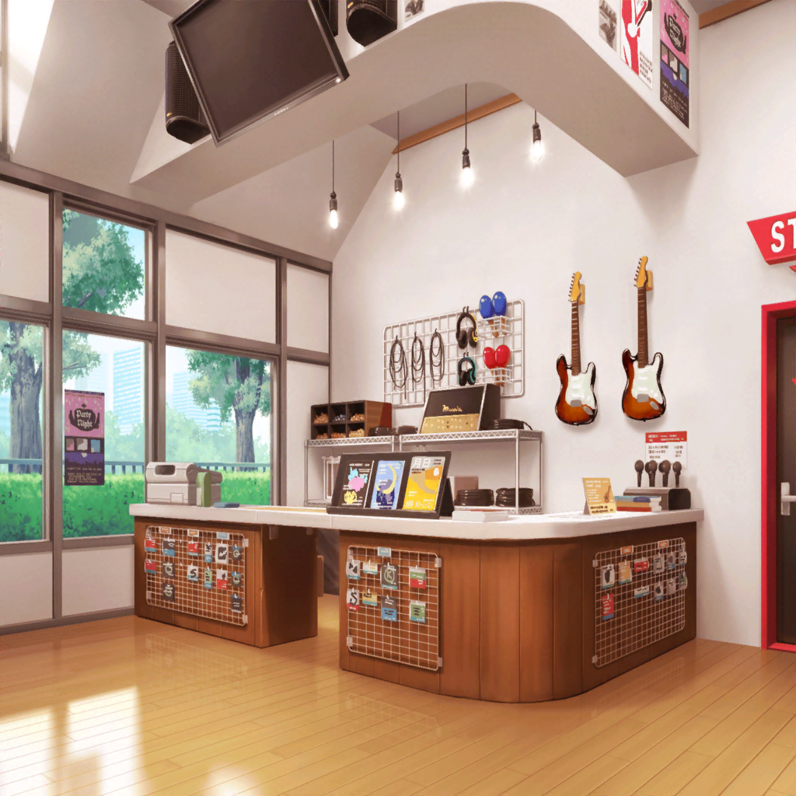

友希那
ん……？ あなたは……
友希那
もしかして、今日の私達のライブの担当は、
あなたなの?
友希那
そう……よろしく
友希那
……？ なんで私のことを見て……
友希那
ああ……。そういえば、あなた、
私達の衣装を見るの、初めてだったわね
友希那
……ええ、そうよ。
この服は、私達のバンド衣装
友希那
……似合ってる？
友希那
ありがとう。でも、前にも言ったかもしれないけど、
私は音楽以外に興味はないの
友希那
それに、衣装を褒められても、
私達の音楽とは何も関係ないわ
友希那
だから正直、ほめられても、
どう反応していいかわからない
友希那
……え？
そのぐらい、音楽が好きなんだね……？
友希那
……………………
友希那
………………いつか
友希那
いつかそんなふうに言える日がくるのかしらね……
友希那
……いえ、なんでもないわ。
ごめんなさい
友希那
……もうリハーサルの時間だわ
そろそろ、行くわね
友希那
……ええ、ありがとう。
今日のライブも全力でやり通すだけ……
友希那
もし時間があったら、私達のステージを見に来てほしい
友希那
きっとあなたを、満足させてみせるから